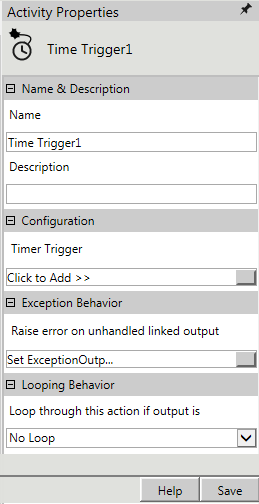
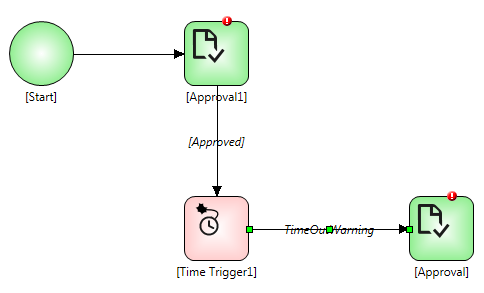

No
Activity description:
The Time Trigger Activity can be used to put on hold workflow execution. It is useful in ensuring the execution of certain activities at specific times. Conditional routing can be performed for different timeouts. Multiple non-recurring timeouts can be scheduled using this activity.
Activity Properties:
The Time Trigger activity has to be configured by specifying appropriate values for the different properties in the Activity Properties area. The Activity Properties can be accessed by clicking on the Activity Properties tool in the tool bar or by selecting the appropriate option from the right click menu for the Time Trigger activity. The Activity Properties are organized under the following groups of related properties. The properties under each group are described in this topic.

Name & Description
The properties in the Name & Description group have been described below. You can use these properties to specify the name and description for the activity.
Name - This property can be used to specify a name for the activity.
Property Type: Optional (This property needs to be set only if necessary.)
Description - This property specifies a brief description to be displayed for the activity.
Property Type: Optional (This property needs to be set only if necessary.)
Configuration
The properties in the Configuration group have been described below. You can use these properties to configure the functionality of the activity.
Timer Trigger - This property allows the user to specify the timeout(s) for triggering activities in the workflow. This will induce a delay in the execution of the affected activities.
Property Type: Mandatory (This property must be set if the activity is to be executed.)
Steps to set the Timer Trigger property
See Time Trigger: Timer Trigger for a detailed description of the Timer Trigger property window.
Activity outputs:
The Time Trigger Activity does not have any standard return value. It will output the value specified by the user in the Time
Trigger property.
Example for Time Trigger Activity
To hold workflow execution from Approver1 to Approver2, Use Time Trigger Activity for particular time.
Step 1: Design a workflow as shown in the figure below.

Step 2: Select the Time Trigger Property.
Step 3: Set the Time Interval and specify the output value in output field.
Step 4: Click Update button to save changes.
Exception Behavior
Each activity has the Raise Error on Unhandled Linked Output property on click of which, it shows all the default configured mapped error outputs in red with their check boxes selected.
See Mapped Error Outputs for more details.